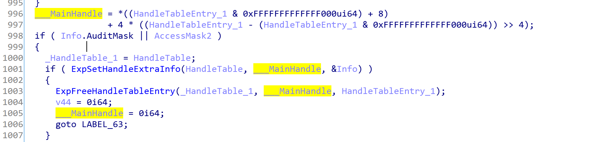

Introduction
Welcome to the first part of a series of posts about Exploring & Reversing Windows Concepts and Internals. If you reach here then you’re probably a security researcher or a programmer and this post and similar posts can help you understand what’s going on in some parts of Windows when you use objects with different users and credentials and what you can expect from Windows and how it internally works.
If you want to follow other parts of this tutorial or other tutorials, please visit here.
Overview
In this part, I’m gonna describe some internal structures and functions relating to the “Handles” and we’ll see how Windows saves these handles in its internal structures then we go to see how callbacks work. For example, when you create a handle what kind of mechanisms exists in Windows to notify you about the handle creation. After that, we’ll see how Windows internally calls these callbacks by analyzing the process of creating a handle when a user-mode application requests a handle to the kernel. At last, we’ll see how Windows saves these callbacks and check other (somehow unknown) callbacks by studying different Object Types in Windows and we’ll practically use them in our drivers.
Table of Contents
- Introduction
- Overview
- Table of Contents
- Handles
- What is a Handle?
- Handles in Windows Kernel
- Changing Handles Access
- Callbacks
- Callbacks for processes
- Handle Creation Process
- PsOpenProcess
- ObOpenObjectByPointer
- SECURITY_SUBJECT_CONTEXT
- ACCESS_STATE
- ObpCreateHandle
- Object Types
- ObjectTypes in Windows
- Finding Process Object Type
- TypeIndex in Object Types
- Finding All Windows _OBJECT_TYPE(s)
- Finding Types which support callback
- Analyzing Callbacks in ObjectTypes
- DumpProcedure
- OpenProcedure
- CloseProcedure
- DeleteProcedure
- ParseProcedure
- ParseProcedureEx
- SecurityProcedure
- QueryNameProcedure
- OkayToCloseProcedure
- Using Callbacks in ObjectTypes
- Conclusion
- References
What is a Handle?
If you’re familiar with the way Windows shares its resources, then you probably know about the handles. In short, the handle is a value that the Windows kernel returns to the user-mode application (if you have needed privileges or have an account which is not denied by DACL) and this handle can be used for further action on the object.
There is a tool called “handle” from the SysInternals which can be downloaded from here.
The official site describes :
Ever wondered which program has a particular file or directory open? Now you can find out. Handle is a utility that displays information about open handles for any process in the system. You can use it to see the programs that have a file open, or to see the object types and names of all the handles of a program.
Let’s see what are the handles of processes.
For example,
1
handle windows\system
This command shows every handle for each process in which their handle name contains “windows\system”. The name match is case-insensitive and the fragment specified can be anywhere in the paths you are interested in. You can imagine how this way can be used to find what process(es) are opening a specific file when you try to remove them.
Finding all the handles in User-mode
One interesting thing in Windows is if you are in Integrity Level >= Medium, then you can access handles to all processes, even kernel addresses of objects. Alex mentioned that KASLR is not designed to protect against processes with Medium Integrity or above. By the way, its one of the known methods to bypass KASLR (e.g when you have a write-what-where bug and don’t know where to modify then you can use one of the objects in the kernel as you have the addresses).
The PoC for this way is available on GitHub (https://github.com/SinaKarvandi/Process-Magics/tree/master/EnumAllHandles) and you can see the results from the following images.
Now you can see all the handles even from other processes (like system process) with an unprivileged (non-elevated UAC) user.
Handles In Windows Kernel
Let’s see how Windows saves and manages the handles in its kernel.
In process structure (nt!_EPROCESS) there is a field called “ObjectTable”.
1
2
kd> dt nt!_EPROCESS -y object
+0x418 ObjectTable : Ptr64 _HANDLE_TABLE
The nt!_HANDLE_TABLE is like this :
1
2
3
4
5
6
7
8
9
10
11
12
13
14
15
16
17
18
kd> dt nt!_HANDLE_TABLE
+0x000 NextHandleNeedingPool : Uint4B
+0x004 ExtraInfoPages : Int4B
+0x008 TableCode : Uint8B
+0x010 QuotaProcess : Ptr64 _EPROCESS
+0x018 HandleTableList : _LIST_ENTRY
+0x028 UniqueProcessId : Uint4B
+0x02c Flags : Uint4B
+0x02c StrictFIFO : Pos 0, 1 Bit
+0x02c EnableHandleExceptions : Pos 1, 1 Bit
+0x02c Rundown : Pos 2, 1 Bit
+0x02c Duplicated : Pos 3, 1 Bit
+0x02c RaiseUMExceptionOnInvalidHandleClose : Pos 4, 1 Bit
+0x030 HandleContentionEvent : _EX_PUSH_LOCK
+0x038 HandleTableLock : _EX_PUSH_LOCK
+0x040 FreeLists : [1] _HANDLE_TABLE_FREE_LIST
+0x040 ActualEntry : [32] UChar
+0x060 DebugInfo : Ptr64 _HANDLE_TRACE_DEBUG_INFO
Using HandleTableList, you can traverse through each handle of your target process.
Each handle is defined in a structure called “nt!_HANDLE_TABLE_ENTRY “ and among these fields the most interesting one is GrantedAccessBits.
1
2
3
4
5
6
7
8
9
10
11
12
13
14
15
16
kd> dt nt!_HANDLE_TABLE_ENTRY
+0x000 VolatileLowValue : Int8B
+0x000 LowValue : Int8B
+0x000 InfoTable : Ptr64 _HANDLE_TABLE_ENTRY_INFO
+0x008 HighValue : Int8B
+0x008 NextFreeHandleEntry : Ptr64 _HANDLE_TABLE_ENTRY
+0x008 LeafHandleValue : _EXHANDLE
+0x000 RefCountField : Int8B
+0x000 Unlocked : Pos 0, 1 Bit
+0x000 RefCnt : Pos 1, 16 Bits
+0x000 Attributes : Pos 17, 3 Bits
+0x000 ObjectPointerBits : Pos 20, 44 Bits
+0x008 GrantedAccessBits : Pos 0, 25 Bits
+0x008 NoRightsUpgrade : Pos 25, 1 Bit
+0x008 Spare1 : Pos 26, 6 Bits
+0x00c Spare2 : Uint4B
There is a command (!handle) in windbg which used to show the details about the handle.
The following picture describes the details of each field in !handle.
Changing Handles GrantedAccess
If you map (Entry) field to the _HANDLE_TABLE_ENTRY then you can see the following results.
1
2
3
4
5
6
7
8
9
10
11
12
13
14
15
16
kd> dt nt!_HANDLE_TABLE_ENTRY ffffa30c9aa26010
+0x000 VolatileLowValue : 0n-1981244744615788709
+0x000 LowValue : 0n-1981244744615788709
+0x000 InfoTable : 0xe4813466`e010ff5b _HANDLE_TABLE_ENTRY_INFO
+0x008 HighValue : 0n2097151
+0x008 NextFreeHandleEntry : 0x00000000`001fffff _HANDLE_TABLE_ENTRY
+0x008 LeafHandleValue : _EXHANDLE
+0x000 RefCountField : 0n-1981244744615788709
+0x000 Unlocked : 0y1
+0x000 RefCnt : 0y0111111110101101 (0x7fad)
+0x000 Attributes : 0y000
+0x000 ObjectPointerBits : 0y11100100100000010011010001100110111000000001 (0xe4813466e01)
+0x008 GrantedAccessBits : 0y0000111111111111111111111 (0x1fffff)
+0x008 NoRightsUpgrade : 0y0
+0x008 Spare1 : 0y000000 (0)
+0x00c Spare2 : 0
Note that, 0x1fffff means FULL CONTROL. You easily change the access bit, e.g using “eb”. For example when you use a command like “eb ffffa30c9aa26010+8 ee” then if you see the handle again (!handle 0x04) you can see that GrantedAccess is changed.
1
2
3
4
5
6
7
8
9
10
11
PROCESS ffffe4813466e040
SessionId: none Cid: 0004 Peb: 00000000 ParentCid: 0000
DirBase: 001aa002 ObjectTable: ffffa30c9aa06580 HandleCount: 2986.
Image: System
Kernel handle table at ffffa30c9aa06580 with 2986 entries in use
0004: Object: ffffe4813466e040 GrantedAccess: 001fffee (Protected) Entry: ffffa30c9aa26010
Object: ffffe4813466e040 Type: (ffffe4813467b0c0) Process
ObjectHeader: ffffe4813466e010 (new version)
HandleCount: 4 PointerCount: 131188
There is a good post here which describes how the above method can be used in order to bypass the restrictions that a driver can put on a special process or each process that tries to access memory of a protected-process, for example, a game with anit-cheat protection or a security software which protects its memory from being accessed by a remote process and APIs like WriteProcessMemory or ReadProcessMemory).
Let’s see some other functions relating to the handles.
There is a function ExEnumHandleTable which enumerates all the handle from a process by passing a pointer to process’s ObjectTable.
1
2
3
4
5
6
7
8
NTKERNELAPI
BOOLEAN
ExEnumHandleTable (
__in PHANDLE_TABLE HandleTable,
__in EX_ENUMERATE_HANDLE_ROUTINE EnumHandleProcedure,
__in PVOID EnumParameter,
__out_opt PHANDLE Handle
)
Also, there is a function ExpLookupHandleTableEntry which gets the handle table as its first argument (RCX) and the handle value as the second argument (RDX) and returns the _HANDLE_TABLE_ENTRY corresponding to that handle. You can use them in your driver or shellcode.
1
2
3
4
5
PHANDLE_TABLE_ENTRY
ExpLookupHandleTableEntry (
IN PHANDLE_TABLE HandleTable,
IN EXHANDLE tHandle
)
Callbacks for processes
In order to set callback whenever a handle to a process is requested or whatever relating to the handles of Threads or Processes, you can ObRegisterCallbacks function.
The ObRegisterCallbacks routine registers a list of callback routines for thread, process, and desktop handle operations.
The sample for using ObRegisterCallbacks is available on GitHub :
[https://github.com/SinaKarvandi/misc/tree/master/ObRegisterCallbacks]
If you load the above driver, you’ll get the following NTSTATUS error :
“{Access Denied} A process has requested access to an object, but has not been granted those access rights.”
If we look at the decompiled code from IDA and look for the error code (0xC0000022), we’ll reach to the following pseudo-code.
1
2
3
4
5
6
7
8
9
10
11
12
13
14
15
16
if ( v14 )
{
if ( !(unsigned int)MmVerifyCallbackFunctionCheckFlags(v14, 32i64) )
goto LABEL_23;
}
else if ( !v13[3] )
{
break;
}
v15 = v13[3];
if ( v15 && !(unsigned int)MmVerifyCallbackFunctionCheckFlags(v15, 32i64) )
{
LABEL_23:
v5 = 0xC0000022;
goto LABEL_24;
}
It’s clear that MmVerifyCallbackFunctionCheckFlags is the guilty function, I don’t find a way to register my unsigned driver but for this let’s just patch it.
1
2
0: 48 c7 c0 01 00 00 00 mov rax,0x1
7: c3 ret
The above assembly code is enough to always return true so we need to execute the following windbg command:
1
eb nt!MmVerifyCallbackFunctionCheckFlags 48 c7 c0 01 00 00 00 c3
Update 1: As Yarden mentioned, linking in with /INTEGRITYCHECK will save you the need to patch the kernel from the debugger so instead of using the above command you can add /INTEGRITYCHECK to your linker when you’re compiling your driver.
Now load the driver again. If you encounter errors like: “An instance already exists at this altitude on the volume specified”, then you have to change the following line :
1
RtlInitUnicodeString(&Altitude, L"1001");
Make sure to run the following windbg command if you previously didn’t enable the debugging outputs.
1
eb nt!kd_default_mask ff ff ff ff
After running driver, you have to see each handle request to processes or threads with its desired access masks and the corresponding operation (e.g creating a handle or duplicate handle or whatever).
Finally, we’ll get the following results :
Handle Creation Process
Now that we know some of the basic concepts from callbacks and handle tables, let’s have a comprehensive survey from user-mode OpenProcess until we come back to user-mode again so we can see how Windows creates handle and saves it on its handle table.
The following functions have to be called in order to make a handle available to the user-mode in the case of opening a handle to a process.
OpenProcess (user-mode) -> NtOpenProcess (user-mode) -> NtOpenProcess (kernel-mode) -> PsOpenProcess - > ObOpenObjectByPointer -> ObpCreateHandle
If you remeber from the ObRegisterCallbacks, our callbacks called from “ObpCallPreOperationCallbacks” and this function is called by ObpCreateHandle. Also “ObpCallPostOperationCallbacks” is responsible for calling our post operation callbacks (we’ll see them).
Let’s start with OpenProcess, here is an ordered decompiled version of OpenProcess.
1
2
3
4
5
6
7
8
9
10
11
12
13
14
15
16
17
18
19
HANDLE __stdcall OpenProcess(DWORD dwDesiredAccess, BOOL bInheritHandle, DWORD dwProcessId)
{
int result; // eax
CLIENT_ID ClientId; // [rsp+20h] [rbp-48h]
OBJECT_ATTRIBUTES ObjectAttributes; // [rsp+30h] [rbp-38h]
HANDLE ProcessHandle; // [rsp+88h] [rbp+20h]
ObjectAttributes.Length = 0x30;
ObjectAttributes.RootDirectory = 0i64;
ClientId = (CLIENT_ID)(unsigned __int64)(signed int)dwProcessId;
ObjectAttributes.Attributes = bInheritHandle != 0 ? 2 : 0;
ObjectAttributes.ObjectName = 0i64;
_mm_storeu_si128((__m128i *)&ObjectAttributes.SecurityDescriptor, (__m128i)0i64);
result = NtOpenProcess(&ProcessHandle, dwDesiredAccess, &ObjectAttributes, &ClientId);
if ( result >= 0 )
return ProcessHandle;
BaseSetLastNTError(result);
return 0i64;
}
Among the above parameters, dwProcessId and dwDesiredAccess is not in our interest as they’re more and less clear but the most interesting field here is ObjectAttributes, Microsoft explains about Object Attributes here. The structure is below, you can read about each field in MSDN.
1
2
3
4
5
6
7
8
typedef struct _OBJECT_ATTRIBUTES64 {
ULONG Length;
ULONG64 RootDirectory;
ULONG64 ObjectName;
ULONG Attributes;
ULONG64 SecurityDescriptor;
ULONG64 SecurityQualityOfService;
} OBJECT_ATTRIBUTES64;
The above field has some Attributes that is interesting to us, their definition as defined in SDK :
1
2
3
4
5
6
7
8
9
10
#define OBJ_INHERIT 0x00000002L
#define OBJ_PERMANENT 0x00000010L
#define OBJ_EXCLUSIVE 0x00000020L
#define OBJ_CASE_INSENSITIVE 0x00000040L
#define OBJ_OPENIF 0x00000080L
#define OBJ_OPENLINK 0x00000100L
#define OBJ_KERNEL_HANDLE 0x00000200L
#define OBJ_FORCE_ACCESS_CHECK 0x00000400L
#define OBJ_IGNORE_IMPERSONATED_DEVICEMAP 0x00000800L
#define OBJ_VALID_ATTRIBUTES 0x00000FF2L
We’ll see how they affect process handle creation, later.
NtOpenProcess
NtOpenProcess, first checks for its previous mode (user-mode or kernel-mode) then it calls PsOpenProcess.
1
2
3
4
5
6
__kernel_entry NTSYSCALLAPI NTSTATUS NtOpenProcess(
PHANDLE ProcessHandle,
ACCESS_MASK DesiredAccess,
POBJECT_ATTRIBUTES ObjectAttributes,
PCLIENT_ID ClientId
);
PsOpenProcess
The PsOpenProcess is something like this, it’s not documented so it’s based on IDA’s decompile results:
1
2
3
4
5
6
7
8
9
NTSTATUS
FASTCALL
__int64 __fastcall PsOpenProcess(
PHANDLE ProcessHandle,
ACCESS_MASK DesiredAccess,
POBJECT_ATTRIBUTES ObjectAttributes,
PCLIENT_ID ClientId,
char PreviousMode,
char PreviousMode2);
In PsOpenProcess, it first checks whether the handle pointer resides to valid user-mode address then it limits the user-mode handles to 0x1df2. From the following picture, you can see this limitation on handles and their meanings.
In the case of kernel attributes, it limits the handle to the following values.
As you can see, you don’t have access to OBJ_KERNEL_HANDLE and OBJ_VALID_ATTRIBUTES in user-mode and also some undocumented values 0x11800 which is not revealed by Microsoft.
In PsOpenProcess, the next check is for SeDebugPrivilege. As you might know, this is one of the powerful privileges in Windows that causes to bypass any Privilege checks and give the needed accesses directly. You might see it in tools like Mimikatz. It then passes it to the SePrivilegedServiceAuditAlarm. SePrivilegedServiceAuditAlarm is to be called whenever a privileged system service is attempted.
Finally, PsOpenProcess calls ObOpenObjectByPointer.
ObOpenObjectByPointer
In order to explain about ObOpenObjectByPointer, First, we have to know about two structures “ACCESS_STATE” and “SECURITY_SUBJECT_CONTEXT”.
SECURITY_SUBJECT_CONTEXT
The SECURITY_SUBJECT_CONTEXT is used to capture the subject security context for access validation and auditing. It’s like dumping a special context’s token, then lock it in order to avoid any modification and finally do some privilege checks.
Functions like SeCaptureSubjectContext or SeCaptureSubjectContextEx return a pointer to this structure.
For example, the following code shows how this structure can be used to do some privilege checks.
1
2
3
4
5
6
7
8
9
10
11
12
13
14
15
16
17
18
19
20
21
22
23
24
25
26
BOOLEAN HasPrivilege(IN PPRIVILEGE_SET Privilege)
{
BOOLEAN Result;
SECURITY_SUBJECT_CONTEXT SubjectContext;
/* Capture and lock the security subject context */
SeCaptureSubjectContext(&SubjectContext);
SeLockSubjectContext(&SubjectContext);
/* Do privilege check */
Result = SePrivilegeCheck(Privilege, &SubjectContext, UserMode);
/* Audit the privilege */
SePrivilegeObjectAuditAlarm(NULL,
&SubjectContext,
0,
Privilege,
Result,
UserMode);
/* Unlock and release the security subject context and return */
SeUnlockSubjectContext(&SubjectContext);
SeReleaseSubjectContext(&SubjectContext);
return Result;
}
This structure is important because as James Forshaw mentioned in 3rd part of his post about “AppLocker internals” :
A Windows access check takes 4 main parameters:
- A SECURITY_SUBJECT_CONTEXT which identifies the caller’s access tokens.
- A desired access mask.
- A GENERIC_MAPPING structure which allows the access check to convert generic access to object-specific access rights.
- And most importantly, the Security Descriptor which describes the security of the resource being checked.
SECURITY_SUBJECT_CONTEXT is coming from two above mentioned functions, DesiredAccess is also a parameter to ObOpenObjectByPointer and GenericMapping comes from _OBJECT_TYPE’s _OBJECT_TYPE_INITIALIZER+0x4c (I’ll describe about Object Types later in this post.) while security descriptor can be derived from the _OBJECT_HEADER’s +0x28 and object header is also the first parameter to ObOpenObjectByPointer.
1
+0x028 SecurityDescriptor : Ptr64 Void
ACCESS_STATE
As the MSDN describes, The ACCESS_STATE structure describes the state of an access in progress. It contains an object’s subject context, remaining desired access types, granted access types, and, optionally, a privilege set to indicate which privileges were used to permit the access.
Now, let’s return to ObOpenObjectByPointer, This function checks whether the caller passes an access state if not then it creates a new one based on the desired access and the object type’s generic mapping by calling SepCreateAccessStateFromSubjectContext , as the name implies it receives an ACCESS_STATE from the SECURITY_SUBJECT_CONTEX.
Eventually, it checks whether the the function itself (ObOpenObjectByPointer) creates ACCESS_STATE or not. If it creates, then it deletes the ACCESS_STATE and SECURITY_SUBJECT_CONTEXT using SepDeleteAccessState and SeReleaseSubjectContext.
Finally, this function calls the popular ObpCreateHandle which creates the handle.
ObpCreateHandle
For creating a handle, an undocumented function “ObpCreateHandle” is responsible for creating a new handle to an existing object. Generally, ObpCreateHandle creates an entry in the process’ handle table that becomes associated with the object.
ObpCreateHandle defines like this: (there are some differences between current definition and WRK’s definition).
1
2
3
4
5
6
7
8
9
10
11
12
__int64 __fastcall ObpCreateHandle(
_OB_OPEN_REASON OpenReason,
void *Object,
unsigned int DesiredAccess,
_ACCESS_STATE *AccessState,
unsigned int ObjectPointer,
unsigned int Attribute,
char AccessMode,
struct _OBJECT_CREATE_INFO *CreateInfo,
int AccessMask2,
PVOID *NewObject,
PVOID *Handle);
The first argument to this function is _OB_OPEN_REASON which defines like this :
1
2
3
4
5
6
7
8
typedef enum _OB_OPEN_REASON
{
ObCreateHandle = 0,
ObOpenHandle = 1,
ObDuplicateHandle = 2,
ObInheritHandle = 3,
ObMaxOpenReason = 4
} OB_OPEN_REASON;
From the above structure, you can see the cases where ObpCreateHandle might be used for.
If the handle is requested from kernel-mode then “ObpKernelHandleTable” is used as the handle table and if it’s a user-mode application then it calls ObReferenceProcessHandleTable.
The above function (ObReferenceProcessHandleTable), first checks whether it can acquire RundownProtect or not. When run-down protection is in effect, the driver can safely access the object without the risk that the object will be deleted before the access completes. You can imagine that if you use ExAcquireRundownProtection on this field (RundownProtect) then each attempt to create a handle by the special process will cause a 0xC000010A error (An attempt was made to access an exiting process.).
This function finally returns Process->ObjectTable.
In the end, ObpCreateHandle calls ExReleaseRundownProtection which releases the RundownProtect of our process.
After that, ObpCreateHandle calls some undocumented Callbacks (SecurityProcedure). I’ll give a detailed explanation about these kinds of callbacks later on this topic but for now, it first checks whether SecurityProcedure is SeDefaultObjectMethod or not. SeDefaultObjectMethod is the default security method for objects. It is responsible for either retrieving, setting, and deleting the security descriptor of an object. It is not used to assign the original security descriptor to an object and as you can see if our callback fails with {buffer too small} error then it tries to call it once more so by now, you know that this callback is responsible for changing SecurityDescriptor of any object type (each object type separately using ObjectType’s SecurityProcedure).
Don’t worry if things are not clear, after reading the last part (about ObjectTypes) you can return here and read it once again and sure you’ll understand it.
As you can see, these object type callbacks called for each object separately and it’s not specific to a special object (e.g Process, Thread, or Desktop objects).
After making SecurityDescriptor ready, it’s time to perform security checks, ObpCreateHandle calls SeAccessCheck. The SeAccessCheck routine determines whether the requested access rights can be granted to an object protected by a security descriptor and an object owner so ObpCreateHandle passes the SecurityDescriptor of object and AccessState that we have from the previous function to see if the access is granted or not.
As I told you above, ObpCreateHandle calls ObpCallPreOperationCallbacks and this function is responsible for calling callbacks that are registered by ObRegisterCallbacks but in contrast with above callbacks, these callbacks are limited to some object types (e.g Process, Thread, or Desktop).
This limitation is done by the following check, which checks whether object type supports callbacks and if there is any callback registered.
Later, we have a section called “Finding Types which support callback”, it describes how to find these object types but keep in mind, if you set Support Callback bit of an object manually, then PatchGuard comes in and leads to a BSOD.
In order to assign a handle, it first acquires a lock to HANDLE_TABLE.HandleTableLock and then search through HANDLE_TABLE.FreeLists. If there isn’t any empty place in our handle table (based on NextHandleNeedingPool index) then it tries to allocate a new handle table entry for the specified handle table using ExpAllocateHandleTableEntrySlow.
Now, it’s time to compute the handle’s value.

When the handle is computed, it calls ExpSetHandleExtraInfo which gets the HandleTable and Handle and sets the _HANDLE_TABLE_ENTRY_INFO to the handle entry.
1
2
3
4
5
struct _HANDLE_TABLE_ENTRY_INFO
{
unsigned int AuditMask;
unsigned int MaxRelativeAccessMask;
};
ExpSetHandleExtraInfo is used to set AuditMask and AccessMask to the handle and you can see that it removes the handle if the above function failed (using ExpFreeHandleTableEntry).
And finally, it sets the handle value :
1
2
3
4
HandleAddress = ___MainHandle | 0xFFFFFFFF80000000ui64;
if ( !IsKernelHandle )
HandleAddress = ___MainHandle;
*_Handle = HandleAddress;
As you can see, if the handle is user-mode handle then it strips the kernel address bit otherwise it’s a kernel handle and address itself is the handle.
This behavior will be changed in the future if Windows starts supporting Supervisor Mode Access Prevention (SMAP) because as long as they use this protection, they won’t be able to directly write on user-mode addresses and they have to execute extra instruction for this purpose.
The last step is calling ObpPostInterceptHandleCreate this function calls ObpCallPostOperationCallbacks and its responsible for calling Post Operation Callbacks.

ObjectTypes in Windows
If you’d ever used functions like ObReferenceObjectByHandle, ObReferenceObjectByPointer, ObOpenObjectByPointer or other functions then you’ve probably heard of POBJECT_TYPE.
Also, creation routines for the various objects, like IoCreateDriver or PspCreateProcess, call the generic ObCreateObject and pass it a pointer to an appropriate _OBJECT_TYPE structure.
_OBJECT_TYPE is one of the important structures in Windows that stores the definition of different object like Process, Thread, Mutex, etc. If you want to know the difference between NT objects and non-objects you can read the article “What is POBJECT_TYPE?”.
Let’s see the definition:
(I dumped the structures using pdbex written by one of my best friends Petr Benes)
1
2
3
4
5
6
7
8
9
10
11
12
13
14
15
16
17
18
19
typedef struct _OBJECT_TYPE
{
/* 0x0000 */ struct _LIST_ENTRY TypeList;
/* 0x0010 */ struct _UNICODE_STRING Name;
/* 0x0020 */ void* DefaultObject;
/* 0x0028 */ unsigned char Index;
/* 0x0029 */ char Padding_1[3];
/* 0x002c */ unsigned long TotalNumberOfObjects;
/* 0x0030 */ unsigned long TotalNumberOfHandles;
/* 0x0034 */ unsigned long HighWaterNumberOfObjects;
/* 0x0038 */ unsigned long HighWaterNumberOfHandles;
/* 0x003c */ long Padding_2;
/* 0x0040 */ struct _OBJECT_TYPE_INITIALIZER TypeInfo;
/* 0x00b8 */ struct _EX_PUSH_LOCK TypeLock;
/* 0x00c0 */ unsigned long Key;
/* 0x00c4 */ long Padding_3;
/* 0x00c8 */ struct _LIST_ENTRY CallbackList;
} OBJECT_TYPE, *POBJECT_TYPE; /* size: 0x00d8 */
Finding Process Object Type
I’ll talk about some important fields later in this post but for now, let’s see how we can find the _OBJECT_TYPE of a specific object, let say process, first find all the processes EPROCESS.
1
2
3
4
5
6
7
8
9
10
11
12
13
kd> !dml_proc
Address PID Image file name
ffffd689`fd06b380 4 System
ffffd689`fd0ad080 44 Registry
ffffd68a`01875040 24c smss.exe
ffffd68a`07bf74c0 2a4 csrss.exe
ffffd68a`0779c080 304 wininit.exe
ffffd68a`077ae140 30c csrss.exe
ffffd68a`07b21080 33c winlogon.exe
ffffd68a`07b5c100 378 services.exe
ffffd68a`07b5d080 380 lsass.exe
ffffd68a`017a02c0 3dc svchost.exe
....
I choose lsass.exe (ffffd68a07b5d080) as the target. As you might know, Windows saves each object (e.g _EPROCESS) like this :
- _POOL_HEADER
- _OBJECT_QUOTA_CHARGES (optional)
- _OBJECT_HANDLE_DB (optional)
- _OBJECT_NAME (optional)
- _OBJECT_CREATOR_INFO (optional)
- _OBJECT_HEADER
- object body (e.g _EPROCESS)
So if we subtract sizeof(_OBJECT_HEADER) from the EPROCESS we’ll reach to the _OBJECT_HEADER of this object. (you can perform the same thing for _POOL_HEADER too.)
The object header is like this :
1
2
3
4
5
6
7
8
9
10
11
12
13
14
15
16
17
18
19
20
21
22
23
24
kd> dt nt!_OBJECT_HEADER
+0x000 PointerCount : Int8B
+0x008 HandleCount : Int8B
+0x008 NextToFree : Ptr64 Void
+0x010 Lock : _EX_PUSH_LOCK
+0x018 TypeIndex : UChar
+0x019 TraceFlags : UChar
+0x019 DbgRefTrace : Pos 0, 1 Bit
+0x019 DbgTracePermanent : Pos 1, 1 Bit
+0x01a InfoMask : UChar
+0x01b Flags : UChar
+0x01b NewObject : Pos 0, 1 Bit
+0x01b KernelObject : Pos 1, 1 Bit
+0x01b KernelOnlyAccess : Pos 2, 1 Bit
+0x01b ExclusiveObject : Pos 3, 1 Bit
+0x01b PermanentObject : Pos 4, 1 Bit
+0x01b DefaultSecurityQuota : Pos 5, 1 Bit
+0x01b SingleHandleEntry : Pos 6, 1 Bit
+0x01b DeletedInline : Pos 7, 1 Bit
+0x01c Reserved : Uint4B
+0x020 ObjectCreateInfo : Ptr64 _OBJECT_CREATE_INFORMATION
+0x020 QuotaBlockCharged : Ptr64 Void
+0x028 SecurityDescriptor : Ptr64 Void
+0x030 Body : _QUAD
And the sizeof is :
1
2
kd> ?? sizeof(nt!_OBJECT_HEADER)
unsigned int64 0x38
but wait, we’re in top of the object’s Body (means that EPROCESS or whatever starts at _OBJECT_HEADER+0x30) so we have to subtract -0x30 from the EPROCESS (ffffd68a`07b5d080-0x30 = ffffd68a07b5d050) .
1
2
3
4
5
6
7
8
9
10
11
12
13
14
15
16
17
18
19
20
21
22
23
24
kd> dt ffffd68a07b5d050 nt!_OBJECT_HEADER
+0x000 PointerCount : 0n458365
+0x008 HandleCount : 0n14
+0x008 NextToFree : 0x00000000`0000000e Void
+0x010 Lock : _EX_PUSH_LOCK
+0x018 TypeIndex : 0x7a 'z'
+0x019 TraceFlags : 0 ''
+0x019 DbgRefTrace : 0y0
+0x019 DbgTracePermanent : 0y0
+0x01a InfoMask : 0x88 ''
+0x01b Flags : 0 ''
+0x01b NewObject : 0y0
+0x01b KernelObject : 0y0
+0x01b KernelOnlyAccess : 0y0
+0x01b ExclusiveObject : 0y0
+0x01b PermanentObject : 0y0
+0x01b DefaultSecurityQuota : 0y0
+0x01b SingleHandleEntry : 0y0
+0x01b DeletedInline : 0y0
+0x01c Reserved : 0
+0x020 ObjectCreateInfo : 0xfffff803`80468240 _OBJECT_CREATE_INFORMATION
+0x020 QuotaBlockCharged : 0xfffff803`80468240 Void
+0x028 SecurityDescriptor : 0xffffb082`5308716c Void
+0x030 Body : _QUAD
You can also confirm this by looking at the “ObjectHeader” field of “!object” command.
1
2
3
4
kd> !object ffffd68a`07b5d080
Object: ffffd68a07b5d080 Type: (ffffd689fd09a4e0) Process
ObjectHeader: ffffd68a07b5d050 (new version)
HandleCount: 14 PointerCount: 458365
In Windows, each object is derived from a special type and even each type (like process, thread, token) derived from another type called “type”.
Let’s see.
In the above code you can see there is a “Type: (ffffd689fd09a4e0) Process” if we map this to nt!_OBJECT_TYPE, we can it’s “Name” which is “Process”.
1
2
3
4
5
6
7
8
9
10
11
12
13
kd> dt nt!_OBJECT_TYPE ffffd689`fd09a4e0
+0x000 TypeList : _LIST_ENTRY [ 0xffffd689`fd09a4e0 - 0xffffd689`fd09a4e0 ]
+0x010 Name : _UNICODE_STRING "Process"
+0x020 DefaultObject : (null)
+0x028 Index : 0x7 ''
+0x02c TotalNumberOfObjects : 0x85
+0x030 TotalNumberOfHandles : 0x45b
+0x034 HighWaterNumberOfObjects : 0x97
+0x038 HighWaterNumberOfHandles : 0x518
+0x040 TypeInfo : _OBJECT_TYPE_INITIALIZER
+0x0b8 TypeLock : _EX_PUSH_LOCK
+0x0c0 Key : 0x636f7250
+0x0c8 CallbackList : _LIST_ENTRY [ 0xffffb082`4f982140 - 0xffffb082`4f8f5fb0 ]
This _OBJECT_TYPE (process) is also mapped to a global variable called “nt!PsProcessType” (Do you remember we filled OB_OPERATION_REGISTRATION.ObjectType with PsProcessType and PsThreadType ?) and These global variables are OBJECT_TYPE**, not just single indirection pointers.
1
2
kd> dq nt!PsProcessType L1
fffff803`8056f390 ffffd689`fd09a4e0
TypeIndex in Object Types
Another important field from _OBJECT_HEADER is TypeIndex.
Let’s review this line again :
1
+0x018 TypeIndex : 0x7a 'z'
This field didn’t exist in until Windows Seven, means that before Windows Seven each _OBJECT_HEADER has a field called “Type” which was a pointer to its “_OBJECT_TYPE”, that’s the reason for (old version) and (new version) in !object’s results. You can read more about it in the article in CodeMachine.
But in the newer versions of Windows (> Windows 7) you can see TypeIndex. Instead of pointing directly to the OBJECT_TYPE data structure, the object header now contains an index into a new global data structure nt!ObTypeIndexTable, which is an array of pointers to the different OBJECT_TYPE structures.
The following command is used to get the _OBJECT_TYPE of target index, note that in this example 0x7 is index and @$ptrsize is defined by Windbg which shows either your pointer are 8 Bytes (x64) or 4 Bytes (x86).
1
kd> dt nt!_OBJECT_TYPE poi(nt!ObTypeIndexTable+(0x7*@$ptrsize))
You can see the result here :
1
2
3
4
5
6
7
8
9
10
11
12
13
kd> dt nt!_OBJECT_TYPE poi(nt!ObTypeIndexTable+(0x7*@$ptrsize))
+0x000 TypeList : _LIST_ENTRY [ 0xffffd689`fd09a4e0 - 0xffffd689`fd09a4e0 ]
+0x010 Name : _UNICODE_STRING "Process"
+0x020 DefaultObject : (null)
+0x028 Index : 0x7 ''
+0x02c TotalNumberOfObjects : 0x85
+0x030 TotalNumberOfHandles : 0x45b
+0x034 HighWaterNumberOfObjects : 0x97
+0x038 HighWaterNumberOfHandles : 0x518
+0x040 TypeInfo : _OBJECT_TYPE_INITIALIZER
+0x0b8 TypeLock : _EX_PUSH_LOCK
+0x0c0 Key : 0x636f7250
+0x0c8 CallbackList : _LIST_ENTRY [ 0xffffb082`4f982140 - 0xffffb082`4f8f5fb0 ]
But wait, in or example we see that (TypeIndex : 0x7a) and its index is not 0x7a! It turns out that in Windows 10 they decided to not directly point to the index (why?) of nt!ObTypeIndexTable instead you have to do some XORs in order to find the right index.
Update 2 :
Take a look at the following slides from NTarakanov :
[http://www.powerofcommunity.net/poc2018/nikita.pdf]
The reason why they XORed TypeIndex with nt!ObHeaderCookie is the fact that it’s possible to modify the nt!_OBJECT_HEADER.TypeIndex of each object (for example in the case of a pool overflow), And then it would be possible to point to other _OBJECT_TYPEs like ALPC_OBJECT and trigger this vulnerability (pool overflow) as it was possible to control the behavior of callbacks in these objects.
The following picture is copied from this post which describes how he understands it by reversing nt!ObGetObjectType , you can do the same thing and it works.
Keep in mind that the second member of nt!ObTypeIndexTable is “Type”. If you get the _OBJECT_HEADER of Process’s _OBJECT_TYPE itself, then you’ll reach to the following _OBJECT_TYPE .
1
2
3
4
5
6
7
8
9
10
11
12
13
kd> dt nt!_OBJECT_TYPE poi(nt!ObTypeIndexTable+((0x2)*@$ptrsize))
+0x000 TypeList : _LIST_ENTRY [ 0xffffd689`fd09acd0 - 0xffffd68a`01413750 ]
+0x010 Name : _UNICODE_STRING "Type"
+0x020 DefaultObject : 0xfffff803`80442780 Void
+0x028 Index : 0x2 ''
+0x02c TotalNumberOfObjects : 0x43
+0x030 TotalNumberOfHandles : 0
+0x034 HighWaterNumberOfObjects : 0x43
+0x038 HighWaterNumberOfHandles : 0
+0x040 TypeInfo : _OBJECT_TYPE_INITIALIZER
+0x0b8 TypeLock : _EX_PUSH_LOCK
+0x0c0 Key : 0x546a624f
+0x0c8 CallbackList : _LIST_ENTRY [ 0xffffd689`fd09ade8 - 0xffffd689`fd09ade8 ]
Now that we know what the object type is, it’s time to dig deeper into Windows _OBJECT_TYPEs and find all of them.
Finding All Windows _OBJECT_TYPE(s)
The first and easiest way is using Windbg’s “!object \ObjectTypes” or using tools like SysInternals’ WinObj.
Using windbg , you’ll get the following results but the result of my tests shows that this command’s results is not complete, that’s why we need a third way to explore the kernel types. WinObj also won’t show a complete result.
1
2
3
4
5
6
7
8
9
10
11
12
13
14
15
16
17
18
19
20
21
22
23
24
25
26
27
28
29
30
31
32
33
34
35
36
37
38
39
40
41
42
43
44
45
46
47
kd> !object \ObjectTypes
Object: ffffb0824ea08700 Type: (ffffd689fd09a900) Directory
ObjectHeader: ffffb0824ea086d0 (new version)
HandleCount: 0 PointerCount: 69
Directory Object: ffffb0824ea07cb0 Name: ObjectTypes
Hash Address Type Name
---- ------- ---- ----
00 ffffd689fd0f5640 Type TmTm
01 ffffd689fd094560 Type Desktop
ffffd689fd09a4e0 Type Process
02 ffffd689fd0f6400 Type EnergyTracker
ffffd689fd0f6980 Type RegistryTransaction
03 ffffd689fd093640 Type DebugObject
04 ffffd68a014137a0 Type VRegConfigurationContext
ffffd689fd0f50c0 Type TpWorkerFactory
05 ffffd689fd0f6ae0 Type Adapter
ffffd689fd09a220 Type Token
06 ffffd689fd0f9900 Type DxgkSharedResource
07 ffffd689fd0934e0 Type PsSiloContextPaged
08 ffffd689fd0fa400 Type NdisCmState
ffffd689fd0937a0 Type ActivityReference
09 ffffd689fd0faf00 Type PcwObject
ffffd689fd0f5bc0 Type WmiGuid
11 ffffd689fd0f90c0 Type DmaAdapter
ffffd689fd0f5e80 Type EtwRegistration
12 ffffd689fd0f9640 Type DxgkSharedBundleObject
ffffd689fd0f5900 Type Session
ffffd689fd093d20 Type RawInputManager
ffffd689fd093900 Type Timer
13 ffffd689fd094820 Type Mutant
14 ffffd689fd093a60 Type IRTimer
16 ffffd689fd0fa980 Type DxgkCurrentDxgProcessObject
ffffd689fd0f6c40 Type IoCompletion
17 ffffd689fd0f94e0 Type DxgkSharedProtectedSessionObject
ffffd689fd0fa560 Type DxgkSharedSyncObject
ffffd689fd093220 Type WindowStation
ffffd689fd094ae0 Type Profile
18 ffffd689fd0f6560 Type File
20 ffffd689fd0930c0 Type Partition
21 ffffd689fd0f9e80 Type DxgkSharedKeyedMutexObject
ffffd689fd0946c0 Type ActivationObject
ffffd689fd093380 Type Semaphore
...
ffffd689fd09ad20 Type Type
...
The third method for getting objects is interpreting Windows structures manually using Windbg. Before further investigation we have to find the “Type“‘s _OBJECT_TYPE (e.g a process type itself is a “Type”), for this purpose first we have to find Process’s _OBJECT_TYPE :
1
2
3
4
5
kd> x nt!PsProcessType
fffff803`8056f390 nt!PsProcessType = <no type information>
kd> dq fffff803`8056f390 l1
fffff803`8056f390 ffffd689`fd09a4e0
Using !object we can find its type :
1
2
3
4
5
kd> !object ffffd689`fd09a4e0
Object: ffffd689fd09a4e0 Type: (ffffd689fd09ad20) Type
ObjectHeader: ffffd689fd09a4b0 (new version)
HandleCount: 0 PointerCount: 2
Directory Object: ffffb0824ea08700 Name: Process
you can also find the “Type“‘s location using “!object \ObjectTypes”.
Now that we have a pointer to “Type“‘s _OBJECT_TYPE ( = ffffd689fd09ad20), it’s time to find other types, _OBJECT_TYPE itself has a “TypeList” but doesn’t seem to be a list to Object Types, you can traverse it, it won’t give a valid result. If you remember from the first part of this post, I told you the order when Windows allocates the objects (search for “ Windows saves each object” in this post and see it again.). It turns out that above the Type’s _OBJECT_HEADER, there is another optional structure, called “_OBJECT_HEADER_CREATOR_INFO”, let’s see what’s the definition of this structure.
1
2
3
4
5
6
7
8
9
kd> dt nt!_OBJECT_HEADER_CREATOR_INFO
+0x000 TypeList : _LIST_ENTRY
+0x010 CreatorUniqueProcess : Ptr64 Void
+0x018 CreatorBackTraceIndex : Uint2B
+0x01a Reserved1 : Uint2B
+0x01c Reserved2 : Uint4B
kd> ?? sizeof(nt!_OBJECT_HEADER_CREATOR_INFO)
unsigned int64 0x20
As I told you, _OBJECT_HEADER_CREATOR_INFO is above the _OBJECT_HEADER so we need a little calculation here, sizeof( _OBJECT_HEADER_CREATOR_INFO) = 0x20 and for reaching to the _OBJECT_HEADER we have to subtract the pointer (ffffd689fd09ad20) by 0x30.
ffffd689fd09ad20 - 0x30 - 0x20 = FFFFD689FD09ACD0 => Pointer to _OBJECT_HEADER_CREATOR_INFO
The TypeList in _OBJECT_HEADER_CREATOR_INFO is _LIST_ENTRY which shows us all the Types. We’ll use Windbg to traverse through the list.
1
2
3
4
5
6
7
8
9
10
11
12
13
14
15
16
17
kd> dt FFFFD689FD09ACD0 nt!_OBJECT_HEADER_CREATOR_INFO -l TypeList.Flink -y TypeList
TypeList.Flink at 0xffffd689`fd09acd0
---------------------------------------------
+0x000 TypeList : _LIST_ENTRY [ 0xffffd689`fd09a8b0 - 0xffffd689`fd09ad20 ]
TypeList.Flink at 0xffffd689`fd09a8b0
---------------------------------------------
+0x000 TypeList : _LIST_ENTRY [ 0xffffd689`fd09a070 - 0xffffd689`fd09acd0 ]
TypeList.Flink at 0xffffd689`fd09a070
---------------------------------------------
+0x000 TypeList : _LIST_ENTRY [ 0xffffd689`fd09a1d0 - 0xffffd689`fd09a8b0 ]
TypeList.Flink at 0xffffd689`fd09a1d0
---------------------------------------------
+0x000 TypeList : _LIST_ENTRY [ 0xffffd689`fd09a330 - 0xffffd689`fd09a070 ]
...
You can see a pointer to all of the Types (of course from _OBJECT_HEADER_CREATOR_INFO). Let’s verify we found them correctly by looking at their names (Don’t forget we have to add 0x20 and ox30 to reach the start of the _OBJECT_TYPE).
1
2
3
4
5
6
7
8
9
10
11
12
13
14
15
16
17
18
19
20
21
22
23
24
25
26
27
28
29
30
31
32
33
34
35
36
37
38
39
40
41
42
43
44
45
46
47
48
49
50
51
52
53
54
55
56
57
58
59
60
61
62
63
64
65
66
67
68
69
70
71
72
73
74
75
76
77
78
79
80
81
82
83
84
85
86
87
88
89
90
91
92
93
94
95
96
97
98
99
100
101
102
103
104
105
106
107
108
109
110
111
112
113
114
115
116
117
118
119
120
121
122
123
124
125
126
127
128
129
130
131
132
133
134
135
136
137
138
139
140
kd> dt nt!_OBJECT_TYPE 0xffffd689`fd09acd0+20+30 -y Name
+0x010 Name : _UNICODE_STRING "Type"
kd> dt nt!_OBJECT_TYPE 0xffffd689`fd09a8b0+20+30 -y Name
+0x010 Name : _UNICODE_STRING "Directory"
kd> dt nt!_OBJECT_TYPE 0xffffd689`fd09a070+20+30 -y Name
+0x010 Name : _UNICODE_STRING "SymbolicLink"
kd> dt nt!_OBJECT_TYPE 0xffffd689`fd09a1d0+20+30 -y Name
+0x010 Name : _UNICODE_STRING "Token"
kd> dt nt!_OBJECT_TYPE 0xffffd689`fd09a330+20+30 -y Name
+0x010 Name : _UNICODE_STRING "Job"
kd> dt nt!_OBJECT_TYPE 0xffffd689`fd09a490+20+30 -y Name
+0x010 Name : _UNICODE_STRING "Process"
kd> dt nt!_OBJECT_TYPE 0xffffd689`fd0943b0+20+30 -y Name
+0x010 Name : _UNICODE_STRING "Thread"
kd> dt nt!_OBJECT_TYPE 0xffffd689`fd093070+20+30 -y Name
+0x010 Name : _UNICODE_STRING "Partition"
kd> dt nt!_OBJECT_TYPE 0xffffd689`fd0940f0+20+30 -y Name
+0x010 Name : _UNICODE_STRING "UserApcReserve"
kd> dt nt!_OBJECT_TYPE 0xffffd689`fd094930+20+30 -y Name
+0x010 Name : _UNICODE_STRING "IoCompletionReserve"
kd> dt nt!_OBJECT_TYPE 0xffffd689`fd093750+20+30 -y Name
+0x010 Name : _UNICODE_STRING "ActivityReference"
kd> dt nt!_OBJECT_TYPE 0xffffd689`fd093490+20+30 -y Name
+0x010 Name : _UNICODE_STRING "PsSiloContextPaged"
kd> dt nt!_OBJECT_TYPE 0xffffd689`fd094250+20+30 -y Name
+0x010 Name : _UNICODE_STRING "PsSiloContextNonPaged"
kd> dt nt!_OBJECT_TYPE 0xffffd689`fd0935f0+20+30 -y Name
+0x010 Name : _UNICODE_STRING "DebugObject"
kd> dt nt!_OBJECT_TYPE 0xffffd689`fd094eb0+20+30 -y Name
+0x010 Name : _UNICODE_STRING "Event"
kd> dt nt!_OBJECT_TYPE 0xffffd689`fd0947d0+20+30 -y Name
+0x010 Name : _UNICODE_STRING "Mutant"
kd> dt nt!_OBJECT_TYPE 0xffffd689`fd094bf0+20+30 -y Name
+0x010 Name : _UNICODE_STRING "Callback"
kd> dt nt!_OBJECT_TYPE 0xffffd689`fd093330+20+30 -y Name
+0x010 Name : _UNICODE_STRING "Semaphore"
kd> dt nt!_OBJECT_TYPE 0xffffd689`fd0938b0+20+30 -y Name
+0x010 Name : _UNICODE_STRING "Timer"
kd> dt nt!_OBJECT_TYPE 0xffffd689`fd093a10+20+30 -y Name
+0x010 Name : _UNICODE_STRING "IRTimer"
kd> dt nt!_OBJECT_TYPE 0xffffd689`fd094a90+20+30 -y Name
+0x010 Name : _UNICODE_STRING "Profile"
kd> dt nt!_OBJECT_TYPE 0xffffd689`fd094d50+20+30 -y Name
+0x010 Name : _UNICODE_STRING "KeyedEvent"
kd> dt nt!_OBJECT_TYPE 0xffffd689`fd0931d0+20+30 -y Name
+0x010 Name : _UNICODE_STRING "WindowStation"
kd> dt nt!_OBJECT_TYPE 0xffffd689`fd094510+20+30 -y Name
+0x010 Name : _UNICODE_STRING "Desktop"
kd> dt nt!_OBJECT_TYPE 0xffffd689`fd093b70+20+30 -y Name
+0x010 Name : _UNICODE_STRING "Composition"
kd> dt nt!_OBJECT_TYPE 0xffffd689`fd093cd0+20+30 -y Name
+0x010 Name : _UNICODE_STRING "RawInputManager"
kd> dt nt!_OBJECT_TYPE 0xffffd689`fd093e30+20+30 -y Name
+0x010 Name : _UNICODE_STRING "CoreMessaging"
kd> dt nt!_OBJECT_TYPE 0xffffd689`fd094670+20+30 -y Name
+0x010 Name : _UNICODE_STRING "ActivationObject"
kd> dt nt!_OBJECT_TYPE 0xffffd689`fd0f5070+20+30 -y Name
+0x010 Name : _UNICODE_STRING "TpWorkerFactory"
kd> dt nt!_OBJECT_TYPE 0xffffd689`fd0f6a90+20+30 -y Name
+0x010 Name : _UNICODE_STRING "Adapter"
kd> dt nt!_OBJECT_TYPE 0xffffd689`fd0f5490+20+30 -y Name
+0x010 Name : _UNICODE_STRING "Controller"
kd> dt nt!_OBJECT_TYPE 0xffffd689`fd0f5330+20+30 -y Name
+0x010 Name : _UNICODE_STRING "Device"
kd> dt nt!_OBJECT_TYPE 0xffffd689`fd0f5750+20+30 -y Name
+0x010 Name : _UNICODE_STRING "Driver"
kd> dt nt!_OBJECT_TYPE 0xffffd689`fd0f6bf0+20+30 -y Name
+0x010 Name : _UNICODE_STRING "IoCompletion"
kd> dt nt!_OBJECT_TYPE 0xffffd689`fd0f51d0+20+30 -y Name
+0x010 Name : _UNICODE_STRING "WaitCompletionPacket"
kd> dt nt!_OBJECT_TYPE 0xffffd689`fd0f6510+20+30 -y Name
+0x010 Name : _UNICODE_STRING "File"
kd> dt nt!_OBJECT_TYPE 0xffffd689`fd0f55f0+20+30 -y Name
+0x010 Name : _UNICODE_STRING "TmTm"
kd> dt nt!_OBJECT_TYPE 0xffffd689`fd0f60f0+20+30 -y Name
+0x010 Name : _UNICODE_STRING "TmTx"
kd> dt nt!_OBJECT_TYPE 0xffffd689`fd0f6670+20+30 -y Name
+0x010 Name : _UNICODE_STRING "TmRm"
kd> dt nt!_OBJECT_TYPE 0xffffd689`fd0f6eb0+20+30 -y Name
+0x010 Name : _UNICODE_STRING "TmEn"
kd> dt nt!_OBJECT_TYPE 0xffffd689`fd0f6d50+20+30 -y Name
+0x010 Name : _UNICODE_STRING "Section"
kd> dt nt!_OBJECT_TYPE 0xffffd689`fd0f58b0+20+30 -y Name
+0x010 Name : _UNICODE_STRING "Session"
kd> dt nt!_OBJECT_TYPE 0xffffd689`fd0f5a10+20+30 -y Name
+0x010 Name : _UNICODE_STRING "Key"
kd> dt nt!_OBJECT_TYPE 0xffffd689`fd0f6930+20+30 -y Name
+0x010 Name : _UNICODE_STRING "RegistryTransaction"
kd> dt nt!_OBJECT_TYPE 0xffffd689`fd0f6250+20+30 -y Name
+0x010 Name : _UNICODE_STRING "ALPC Port"
kd> dt nt!_OBJECT_TYPE 0xffffd689`fd0f63b0+20+30 -y Name
+0x010 Name : _UNICODE_STRING "EnergyTracker"
kd> dt nt!_OBJECT_TYPE 0xffffd689`fd0f67d0+20+30 -y Name
+0x010 Name : _UNICODE_STRING "PowerRequest"
kd> dt nt!_OBJECT_TYPE 0xffffd689`fd0f5b70+20+30 -y Name
+0x010 Name : _UNICODE_STRING "WmiGuid"
kd> dt nt!_OBJECT_TYPE 0xffffd689`fd0f5e30+20+30 -y Name
+0x010 Name : _UNICODE_STRING "EtwRegistration"
kd> dt nt!_OBJECT_TYPE 0xffffd689`fd0fa0f0+20+30 -y Name
+0x010 Name : _UNICODE_STRING "EtwSessionDemuxEntry"
kd> dt nt!_OBJECT_TYPE 0xffffd689`fd0fabf0+20+30 -y Name
+0x010 Name : _UNICODE_STRING "EtwConsumer"
kd> dt nt!_OBJECT_TYPE 0xffffd689`fd0f9cd0+20+30 -y Name
+0x010 Name : _UNICODE_STRING "CoverageSampler"
kd> dt nt!_OBJECT_TYPE 0xffffd689`fd0f9070+20+30 -y Name
+0x010 Name : _UNICODE_STRING "DmaAdapter"
kd> dt nt!_OBJECT_TYPE 0xffffd689`fd0faeb0+20+30 -y Name
+0x010 Name : _UNICODE_STRING "PcwObject"
kd> dt nt!_OBJECT_TYPE 0xffffd689`fd0fad50+20+30 -y Name
+0x010 Name : _UNICODE_STRING "FilterCommunicationPort"
kd> dt nt!_OBJECT_TYPE 0xffffd689`fd0fa250+20+30 -y Name
+0x010 Name : _UNICODE_STRING "FilterConnectionPort"
kd> dt nt!_OBJECT_TYPE 0xffffd689`fd0fa3b0+20+30 -y Name
+0x010 Name : _UNICODE_STRING "NdisCmState"
kd> dt nt!_OBJECT_TYPE 0xffffd689`fd0fad50+20+30 -y Name
+0x010 Name : _UNICODE_STRING "FilterCommunicationPort"
kd> dt nt!_OBJECT_TYPE 0xffffd689`fd0fa3b0+20+30 -y Name
+0x010 Name : _UNICODE_STRING "NdisCmState"
kd> dt nt!_OBJECT_TYPE 0xffffd689`fd0f98b0+20+30 -y Name
+0x010 Name : _UNICODE_STRING "DxgkSharedResource"
kd> dt nt!_OBJECT_TYPE 0xffffd689`fd0f9e30+20+30 -y Name
+0x010 Name : _UNICODE_STRING "DxgkSharedKeyedMutexObject"
kd> dt nt!_OBJECT_TYPE 0xffffd689`fd0fa510+20+30 -y Name
+0x010 Name : _UNICODE_STRING "DxgkSharedSyncObject"
kd> dt nt!_OBJECT_TYPE 0xffffd689`fd0fa670+20+30 -y Name
+0x010 Name : _UNICODE_STRING "DxgkSharedSwapChainObject"
kd> dt nt!_OBJECT_TYPE 0xffffd689`fd0fa7d0+20+30 -y Name
+0x010 Name : _UNICODE_STRING "DxgkDisplayManagerObject"
kd> dt nt!_OBJECT_TYPE 0xffffd689`fd0fa930+20+30 -y Name
+0x010 Name : _UNICODE_STRING "DxgkCurrentDxgProcessObject"
kd> dt nt!_OBJECT_TYPE 0xffffd689`fd0f9490+20+30 -y Name
+0x010 Name : _UNICODE_STRING "DxgkSharedProtectedSessionObject"
kd> dt nt!_OBJECT_TYPE 0xffffd68a`01413750+20+30 -y Name
+0x010 Name : _UNICODE_STRING "VRegConfigurationContext"
kd> dt nt!_OBJECT_TYPE 0xffffd689`fd0f95f0+20+30 -y Name
+0x010 Name : _UNICODE_STRING "DxgkSharedBundleObject"
kd> dt nt!_OBJECT_TYPE 0xffffd689`fd09ad20+20+30 -y Name
+0x010 Name : _UNICODE_STRING "--- memory read error at address 0x00000130`00000000 ---"
kd> dt nt!_OBJECT_TYPE 0xffffd689`fd0f9750+20+30 -y Name
+0x010 Name : _UNICODE_STRING "DxgkCompositionObject"
There is also another way that you can enumerate the above list by using the following command (thanks to Bruce Dang for mentioning it):
1
dx Debugger.Utility.Collections.FromListEntry( (*(nt!_OBJECT_TYPE **)&nt!ObpTypeObjectType)->TypeList, "nt!_OBJECT_TYPE", "TypeList").Select(o => (nt!_OBJECT_HEADER*)((unsigned char *)&o + 0x20)).Select( o => o->ObjectName)
The above result contains more types than using “!object \ObjectTypes” (why?) in my case, it finds 70 types while “!object \ObjectTypes” gives only 67 types !!!
Update 1: As Alex mentioned, I got more objects because I copy-pasted FilterCommunicationPort and NdisCmState twice.
Update 1: Also, “!object 0 Type” is a built-in way of enumerating the creator info list.
1
2
3
4
5
6
7
8
9
10
11
12
13
14
15
16
17
18
19
20
21
22
23
24
25
26
27
28
kd> !object 0 Type
Scanning 67 objects of type 'Type'
Object: ffffbc05a907b4e0 Type: (ffffbc05a907b4e0) Type
ObjectHeader: ffffbc05a907b4b0 (new version)
HandleCount: 0 PointerCount: 2
Directory Object: ffff9f02dca02d90 Name: Type
Optional Headers:
CreatorInfo(ffffbc05a907b4b0): Process: 0 BackTraceIndex: 58
NameInfo(ffffbc05a907b4b0)
Object: ffffbc05a907b640 Type: (ffffbc05a907b4e0) Type
ObjectHeader: ffffbc05a907b610 (new version)
HandleCount: 0 PointerCount: 2
Directory Object: ffff9f02dca02d90 Name: Directory
Optional Headers:
CreatorInfo(ffffbc05a907b610): Process: 0 BackTraceIndex: 5a
NameInfo(ffffbc05a907b610)
Object: ffffbc05a907b380 Type: (ffffbc05a907b4e0) Type
ObjectHeader: ffffbc05a907b350 (new version)
HandleCount: 0 PointerCount: 2
Directory Object: ffff9f02dca02d90 Name: SymbolicLink
...
Object: ffffbc05a907b0c0 Type: (ffffbc05a907b4e0) Type
ObjectHeader: ffffbc05a907b090 (new version)
HandleCount: 0 PointerCount: 2
Directory Object: ffff9f02dca02d90 Name: Job
Optional Headers:
Now that we have the pointers to all of the types, it’s time to investigate through each _OBJECT_TYPE(s).
Finding Types which support callback
In _OBJECT_TYPE there is a structure called “_OBJECT_TYPE_INITIALIZER”. It defines like this :
1
2
3
4
5
6
7
8
9
10
11
12
13
14
15
16
17
18
19
20
21
22
23
24
25
26
27
28
29
30
31
32
33
kd> dt nt!_OBJECT_TYPE_INITIALIZER
+0x000 Length : Uint2B
+0x002 ObjectTypeFlags : Uint2B
+0x002 CaseInsensitive : Pos 0, 1 Bit
+0x002 UnnamedObjectsOnly : Pos 1, 1 Bit
+0x002 UseDefaultObject : Pos 2, 1 Bit
+0x002 SecurityRequired : Pos 3, 1 Bit
+0x002 MaintainHandleCount : Pos 4, 1 Bit
+0x002 MaintainTypeList : Pos 5, 1 Bit
+0x002 SupportsObjectCallbacks : Pos 6, 1 Bit
+0x002 CacheAligned : Pos 7, 1 Bit
+0x003 UseExtendedParameters : Pos 0, 1 Bit
+0x003 Reserved : Pos 1, 7 Bits
+0x004 ObjectTypeCode : Uint4B
+0x008 InvalidAttributes : Uint4B
+0x00c GenericMapping : _GENERIC_MAPPING
+0x01c ValidAccessMask : Uint4B
+0x020 RetainAccess : Uint4B
+0x024 PoolType : _POOL_TYPE
+0x028 DefaultPagedPoolCharge : Uint4B
+0x02c DefaultNonPagedPoolCharge : Uint4B
+0x030 DumpProcedure : Ptr64 void
+0x038 OpenProcedure : Ptr64 long
+0x040 CloseProcedure : Ptr64 void
+0x048 DeleteProcedure : Ptr64 void
+0x050 ParseProcedure : Ptr64 long
+0x050 ParseProcedureEx : Ptr64 long
+0x058 SecurityProcedure : Ptr64 long
+0x060 QueryNameProcedure : Ptr64 long
+0x068 OkayToCloseProcedure : Ptr64 unsigned char
+0x070 WaitObjectFlagMask : Uint4B
+0x074 WaitObjectFlagOffset : Uint2B
+0x076 WaitObjectPointerOffset : Uint2B
It contains lots of important fields, for example, “SupportsObjectCallbacks” shows whether the object supports callbacks or not. _OBJECT_TYPE_INITIALIZER starts after 0x40 from the _OBJECT_TYPE so let’s find the objects that support callbacks from the _OBJECT_TYPES that we previously gathered. (Do you remember ObpCallPreOperationCallbacks when we reversed ObpCreateHandle? :) )
1
2
3
4
5
6
7
8
9
10
11
12
13
14
15
16
17
18
19
20
21
22
23
24
25
26
27
28
29
30
31
32
33
34
35
36
37
38
39
40
41
42
43
44
45
46
47
48
49
50
51
52
53
54
55
56
57
58
59
60
61
62
63
64
65
66
67
68
69
70
71
72
73
74
75
76
77
78
79
80
81
82
83
84
85
86
87
88
89
90
91
92
93
94
95
96
97
98
99
100
101
102
103
104
105
106
107
108
109
110
111
112
113
114
115
116
117
118
119
120
121
122
123
124
125
126
127
128
129
130
131
132
133
134
135
136
137
138
139
140
141
kd> dt nt!_OBJECT_TYPE_INITIALIZER 0xffffd689`fd09acd0+20+30+40 -b -y SupportsObjectCallbacks
+0x002 SupportsObjectCallbacks : 0y0
kd> dt nt!_OBJECT_TYPE_INITIALIZER 0xffffd689`fd09a8b0+20+30+40 -b -y SupportsObjectCallbacks
+0x002 SupportsObjectCallbacks : 0y0
kd> dt nt!_OBJECT_TYPE_INITIALIZER 0xffffd689`fd09a070+20+30+40 -b -y SupportsObjectCallbacks
+0x002 SupportsObjectCallbacks : 0y0
kd> dt nt!_OBJECT_TYPE_INITIALIZER 0xffffd689`fd09a1d0+20+30+40 -b -y SupportsObjectCallbacks
+0x002 SupportsObjectCallbacks : 0y0
kd> dt nt!_OBJECT_TYPE_INITIALIZER 0xffffd689`fd09a330+20+30+40 -b -y SupportsObjectCallbacks
+0x002 SupportsObjectCallbacks : 0y0
kd> dt nt!_OBJECT_TYPE_INITIALIZER 0xffffd689`fd09a490+20+30+40 -b -y SupportsObjectCallbacks
+0x002 SupportsObjectCallbacks : 0y1
kd> dt nt!_OBJECT_TYPE_INITIALIZER 0xffffd689`fd0943b0+20+30+40 -b -y SupportsObjectCallbacks
+0x002 SupportsObjectCallbacks : 0y1
kd> dt nt!_OBJECT_TYPE_INITIALIZER 0xffffd689`fd093070+20+30+40 -b -y SupportsObjectCallbacks
+0x002 SupportsObjectCallbacks : 0y0
kd> dt nt!_OBJECT_TYPE_INITIALIZER 0xffffd689`fd0940f0+20+30+40 -b -y SupportsObjectCallbacks
+0x002 SupportsObjectCallbacks : 0y0
kd> dt nt!_OBJECT_TYPE_INITIALIZER 0xffffd689`fd094930+20+30+40 -b -y SupportsObjectCallbacks
+0x002 SupportsObjectCallbacks : 0y0
kd> dt nt!_OBJECT_TYPE_INITIALIZER 0xffffd689`fd093750+20+30+40 -b -y SupportsObjectCallbacks
+0x002 SupportsObjectCallbacks : 0y0
kd> dt nt!_OBJECT_TYPE_INITIALIZER 0xffffd689`fd093490+20+30+40 -b -y SupportsObjectCallbacks
+0x002 SupportsObjectCallbacks : 0y0
kd> dt nt!_OBJECT_TYPE_INITIALIZER 0xffffd689`fd094250+20+30+40 -b -y SupportsObjectCallbacks
+0x002 SupportsObjectCallbacks : 0y0
kd> dt nt!_OBJECT_TYPE_INITIALIZER 0xffffd689`fd0935f0+20+30+40 -b -y SupportsObjectCallbacks
+0x002 SupportsObjectCallbacks : 0y0
kd> dt nt!_OBJECT_TYPE_INITIALIZER 0xffffd689`fd094eb0+20+30+40 -b -y SupportsObjectCallbacks
+0x002 SupportsObjectCallbacks : 0y0
kd> dt nt!_OBJECT_TYPE_INITIALIZER 0xffffd689`fd0947d0+20+30+40 -b -y SupportsObjectCallbacks
+0x002 SupportsObjectCallbacks : 0y0
kd> dt nt!_OBJECT_TYPE_INITIALIZER 0xffffd689`fd094bf0+20+30+40 -b -y SupportsObjectCallbacks
+0x002 SupportsObjectCallbacks : 0y0
kd> dt nt!_OBJECT_TYPE_INITIALIZER 0xffffd689`fd093330+20+30+40 -b -y SupportsObjectCallbacks
+0x002 SupportsObjectCallbacks : 0y0
kd> dt nt!_OBJECT_TYPE_INITIALIZER 0xffffd689`fd0938b0+20+30+40 -b -y SupportsObjectCallbacks
+0x002 SupportsObjectCallbacks : 0y0
kd> dt nt!_OBJECT_TYPE_INITIALIZER 0xffffd689`fd093a10+20+30+40 -b -y SupportsObjectCallbacks
+0x002 SupportsObjectCallbacks : 0y0
kd> dt nt!_OBJECT_TYPE_INITIALIZER 0xffffd689`fd094a90+20+30+40 -b -y SupportsObjectCallbacks
+0x002 SupportsObjectCallbacks : 0y0
kd> dt nt!_OBJECT_TYPE_INITIALIZER 0xffffd689`fd094d50+20+30+40 -b -y SupportsObjectCallbacks
+0x002 SupportsObjectCallbacks : 0y0
kd> dt nt!_OBJECT_TYPE_INITIALIZER 0xffffd689`fd0931d0+20+30+40 -b -y SupportsObjectCallbacks
+0x002 SupportsObjectCallbacks : 0y0
kd> dt nt!_OBJECT_TYPE_INITIALIZER 0xffffd689`fd094510+20+30+40 -b -y SupportsObjectCallbacks
+0x002 SupportsObjectCallbacks : 0y1
kd> dt nt!_OBJECT_TYPE_INITIALIZER 0xffffd689`fd093b70+20+30+40 -b -y SupportsObjectCallbacks
+0x002 SupportsObjectCallbacks : 0y0
kd> dt nt!_OBJECT_TYPE_INITIALIZER 0xffffd689`fd093cd0+20+30+40 -b -y SupportsObjectCallbacks
+0x002 SupportsObjectCallbacks : 0y0
kd> dt nt!_OBJECT_TYPE_INITIALIZER 0xffffd689`fd093e30+20+30+40 -b -y SupportsObjectCallbacks
+0x002 SupportsObjectCallbacks : 0y0
kd> dt nt!_OBJECT_TYPE_INITIALIZER 0xffffd689`fd094670+20+30+40 -b -y SupportsObjectCallbacks
+0x002 SupportsObjectCallbacks : 0y0
kd> dt nt!_OBJECT_TYPE_INITIALIZER 0xffffd689`fd0f5070+20+30+40 -b -y SupportsObjectCallbacks
+0x002 SupportsObjectCallbacks : 0y0
kd> dt nt!_OBJECT_TYPE_INITIALIZER 0xffffd689`fd0f6a90+20+30+40 -b -y SupportsObjectCallbacks
+0x002 SupportsObjectCallbacks : 0y0
kd> dt nt!_OBJECT_TYPE_INITIALIZER 0xffffd689`fd0f5490+20+30+40 -b -y SupportsObjectCallbacks
+0x002 SupportsObjectCallbacks : 0y0
kd> dt nt!_OBJECT_TYPE_INITIALIZER 0xffffd689`fd0f5330+20+30+40 -b -y SupportsObjectCallbacks
+0x002 SupportsObjectCallbacks : 0y0
kd> dt nt!_OBJECT_TYPE_INITIALIZER 0xffffd689`fd0f5750+20+30+40 -b -y SupportsObjectCallbacks
+0x002 SupportsObjectCallbacks : 0y0
kd> dt nt!_OBJECT_TYPE_INITIALIZER 0xffffd689`fd0f6bf0+20+30+40 -b -y SupportsObjectCallbacks
+0x002 SupportsObjectCallbacks : 0y0
kd> dt nt!_OBJECT_TYPE_INITIALIZER 0xffffd689`fd0f51d0+20+30+40 -b -y SupportsObjectCallbacks
+0x002 SupportsObjectCallbacks : 0y0
kd> dt nt!_OBJECT_TYPE_INITIALIZER 0xffffd689`fd0f6510+20+30+40 -b -y SupportsObjectCallbacks
+0x002 SupportsObjectCallbacks : 0y0
kd> dt nt!_OBJECT_TYPE_INITIALIZER 0xffffd689`fd0f55f0+20+30+40 -b -y SupportsObjectCallbacks
+0x002 SupportsObjectCallbacks : 0y0
kd> dt nt!_OBJECT_TYPE_INITIALIZER 0xffffd689`fd0f60f0+20+30+40 -b -y SupportsObjectCallbacks
+0x002 SupportsObjectCallbacks : 0y0
kd> dt nt!_OBJECT_TYPE_INITIALIZER 0xffffd689`fd0f6670+20+30+40 -b -y SupportsObjectCallbacks
+0x002 SupportsObjectCallbacks : 0y0
kd> dt nt!_OBJECT_TYPE_INITIALIZER 0xffffd689`fd0f6eb0+20+30+40 -b -y SupportsObjectCallbacks
+0x002 SupportsObjectCallbacks : 0y0
kd> dt nt!_OBJECT_TYPE_INITIALIZER 0xffffd689`fd0f6d50+20+30+40 -b -y SupportsObjectCallbacks
+0x002 SupportsObjectCallbacks : 0y0
kd> dt nt!_OBJECT_TYPE_INITIALIZER 0xffffd689`fd0f58b0+20+30+40 -b -y SupportsObjectCallbacks
+0x002 SupportsObjectCallbacks : 0y0
kd> dt nt!_OBJECT_TYPE_INITIALIZER 0xffffd689`fd0f5a10+20+30+40 -b -y SupportsObjectCallbacks
+0x002 SupportsObjectCallbacks : 0y0
kd> dt nt!_OBJECT_TYPE_INITIALIZER 0xffffd689`fd0f6930+20+30+40 -b -y SupportsObjectCallbacks
+0x002 SupportsObjectCallbacks : 0y0
kd> dt nt!_OBJECT_TYPE_INITIALIZER 0xffffd689`fd0f6250+20+30+40 -b -y SupportsObjectCallbacks
+0x002 SupportsObjectCallbacks : 0y0
kd> dt nt!_OBJECT_TYPE_INITIALIZER 0xffffd689`fd0f63b0+20+30+40 -b -y SupportsObjectCallbacks
+0x002 SupportsObjectCallbacks : 0y0
kd> dt nt!_OBJECT_TYPE_INITIALIZER 0xffffd689`fd0f67d0+20+30+40 -b -y SupportsObjectCallbacks
+0x002 SupportsObjectCallbacks : 0y0
kd> dt nt!_OBJECT_TYPE_INITIALIZER 0xffffd689`fd0f5b70+20+30+40 -b -y SupportsObjectCallbacks
+0x002 SupportsObjectCallbacks : 0y0
kd> dt nt!_OBJECT_TYPE_INITIALIZER 0xffffd689`fd0f5e30+20+30+40 -b -y SupportsObjectCallbacks
+0x002 SupportsObjectCallbacks : 0y0
kd> dt nt!_OBJECT_TYPE_INITIALIZER 0xffffd689`fd0fa0f0+20+30+40 -b -y SupportsObjectCallbacks
+0x002 SupportsObjectCallbacks : 0y0
kd> dt nt!_OBJECT_TYPE_INITIALIZER 0xffffd689`fd0fabf0+20+30+40 -b -y SupportsObjectCallbacks
+0x002 SupportsObjectCallbacks : 0y0
kd> dt nt!_OBJECT_TYPE_INITIALIZER 0xffffd689`fd0f9cd0+20+30+40 -b -y SupportsObjectCallbacks
+0x002 SupportsObjectCallbacks : 0y0
kd> dt nt!_OBJECT_TYPE_INITIALIZER 0xffffd689`fd0f9070+20+30+40 -b -y SupportsObjectCallbacks
+0x002 SupportsObjectCallbacks : 0y0
kd> dt nt!_OBJECT_TYPE_INITIALIZER 0xffffd689`fd0faeb0+20+30+40 -b -y SupportsObjectCallbacks
+0x002 SupportsObjectCallbacks : 0y0
kd> dt nt!_OBJECT_TYPE_INITIALIZER 0xffffd689`fd0fad50+20+30+40 -b -y SupportsObjectCallbacks
+0x002 SupportsObjectCallbacks : 0y0
kd> dt nt!_OBJECT_TYPE_INITIALIZER 0xffffd689`fd0fa250+20+30+40 -b -y SupportsObjectCallbacks
+0x002 SupportsObjectCallbacks : 0y0
kd> dt nt!_OBJECT_TYPE_INITIALIZER 0xffffd689`fd0fa3b0+20+30+40 -b -y SupportsObjectCallbacks
+0x002 SupportsObjectCallbacks : 0y0
kd> dt nt!_OBJECT_TYPE_INITIALIZER 0xffffd689`fd0fad50+20+30+40 -b -y SupportsObjectCallbacks
+0x002 SupportsObjectCallbacks : 0y0
kd> dt nt!_OBJECT_TYPE_INITIALIZER 0xffffd689`fd0fa3b0+20+30+40 -b -y SupportsObjectCallbacks
+0x002 SupportsObjectCallbacks : 0y0
kd> dt nt!_OBJECT_TYPE_INITIALIZER 0xffffd689`fd0f98b0+20+30+40 -b -y SupportsObjectCallbacks
+0x002 SupportsObjectCallbacks : 0y0
kd> dt nt!_OBJECT_TYPE_INITIALIZER 0xffffd689`fd0f9e30+20+30+40 -b -y SupportsObjectCallbacks
+0x002 SupportsObjectCallbacks : 0y0
kd> dt nt!_OBJECT_TYPE_INITIALIZER 0xffffd689`fd0fa510+20+30+40 -b -y SupportsObjectCallbacks
+0x002 SupportsObjectCallbacks : 0y0
kd> dt nt!_OBJECT_TYPE_INITIALIZER 0xffffd689`fd0fa670+20+30+40 -b -y SupportsObjectCallbacks
+0x002 SupportsObjectCallbacks : 0y0
kd> dt nt!_OBJECT_TYPE_INITIALIZER 0xffffd689`fd0fa7d0+20+30+40 -b -y SupportsObjectCallbacks
+0x002 SupportsObjectCallbacks : 0y0
kd> dt nt!_OBJECT_TYPE_INITIALIZER 0xffffd689`fd0fa930+20+30+40 -b -y SupportsObjectCallbacks
+0x002 SupportsObjectCallbacks : 0y0
kd> dt nt!_OBJECT_TYPE_INITIALIZER 0xffffd689`fd0f9490+20+30+40 -b -y SupportsObjectCallbacks
+0x002 SupportsObjectCallbacks : 0y0
kd> dt nt!_OBJECT_TYPE_INITIALIZER 0xffffd68a`01413750+20+30+40 -b -y SupportsObjectCallbacks
+0x002 SupportsObjectCallbacks : 0y0
kd> dt nt!_OBJECT_TYPE_INITIALIZER 0xffffd689`fd0f95f0+20+30+40 -b -y SupportsObjectCallbacks
+0x002 SupportsObjectCallbacks : 0y0
kd> dt nt!_OBJECT_TYPE_INITIALIZER 0xffffd689`fd09ad20+20+30+40 -b -y SupportsObjectCallbacks
+0x002 SupportsObjectCallbacks : 0y0
kd> dt nt!_OBJECT_TYPE_INITIALIZER 0xffffd689`fd0f9750+20+30+40 -b -y SupportsObjectCallbacks
+0x002 SupportsObjectCallbacks : 0y0
You can see that only the following three _OBJECT_TYPEs support callbacks,
1
2
3
4
5
6
7
8
9
10
11
12
13
14
15
16
kd> dt nt!_OBJECT_TYPE_INITIALIZER 0xffffd689`fd094510+20+30+40 -b -y SupportsObjectCallbacks
+0x002 SupportsObjectCallbacks : 0y1
kd> dt nt!_OBJECT_TYPE_INITIALIZER 0xffffd689`fd09a490+20+30+40 -b -y SupportsObjectCallbacks
+0x002 SupportsObjectCallbacks : 0y1
kd> dt nt!_OBJECT_TYPE_INITIALIZER 0xffffd689`fd0943b0+20+30+40 -b -y SupportsObjectCallbacks
+0x002 SupportsObjectCallbacks : 0y1
kd> dt nt!_OBJECT_TYPE 0xffffd689`fd094510+20+30 -y Name
+0x010 Name : _UNICODE_STRING "Desktop"
kd> dt nt!_OBJECT_TYPE 0xffffd689`fd09a490+20+30 -y Name
+0x010 Name : _UNICODE_STRING "Process"
kd> dt nt!_OBJECT_TYPE 0xffffd689`fd0943b0+20+30 -y Name
+0x010 Name : _UNICODE_STRING "Thread"
The result is not really surprising, previously Alex and other friends told me that Windows 10 TH2 starts supporting “ExDesktopOObjectType”.
There are also another important fields in _OBJECT_TYPE_INITIALIZER for example you can find the ValidAccessMask for that object or find the related functions from DumpProcedure, OpenProcedure, CloseProcedure, DeleteProcedure, ParseProcedure, ParseProcedureEx, SecurityProcedure, QueryNameProcedure, and OkayToCloseProcedure. For example in process type we have the following functions (These are the callbacks that internally used by Microsoft and it’s not revealed to drivers) :
1
2
3
4
5
6
7
8
9
10
11
12
13
14
15
16
17
18
19
20
21
22
[+0x030] DumpProcedure : 0x0 [Type: void (__cdecl*)(void *,_OBJECT_DUMP_CONTROL *)]
[+0x038] OpenProcedure : 0xfffff803806b0170 [Type: long (__cdecl*)(_OB_OPEN_REASON,char,_EPROCESS *,void *,unsigned long *,unsigned long)]
[+0x040] CloseProcedure : 0xfffff803806bdd50 [Type: void (__cdecl*)(_EPROCESS *,void *,unsigned __int64,unsigned __int64)]
[+0x048] DeleteProcedure : 0xfffff80380664c00 [Type: void (__cdecl*)(void *)]
[+0x050] ParseProcedure : 0x0 [Type: long (__cdecl*)(void *,void *,_ACCESS_STATE *,char,unsigned long,_UNICODE_STRING *,_UNICODE_STRING *,void *,_SECURITY_QUALITY_OF_SERVICE *,void * *)]
[+0x050] ParseProcedureEx : 0x0 [Type: long (__cdecl*)(void *,void *,_ACCESS_STATE *,char,unsigned long,_UNICODE_STRING *,_UNICODE_STRING *,void *,_SECURITY_QUALITY_OF_SERVICE *,_OB_EXTENDED_PARSE_PARAMETERS *,void * *)]
[+0x058] SecurityProcedure : 0xfffff803805cd360 [Type: long (__cdecl*)(void *,_SECURITY_OPERATION_CODE,unsigned long *,void *,unsigned long *,void * *,_POOL_TYPE,_GENERIC_MAPPING *,char)]
[+0x060] QueryNameProcedure : 0x0 [Type: long (__cdecl*)(void *,unsigned char,_OBJECT_NAME_INFORMATION *,unsigned long,unsigned long *,char)]
[+0x068] OkayToCloseProcedure : 0x0 [Type: unsigned char (__cdecl*)(_EPROCESS *,void *,void *,char)]
kd> u 0xfffff803806b0170 L1
nt!PspProcessOpen:
fffff803`806b0170 48895c2408 mov qword ptr [rsp+8],rbx
kd> u 0xfffff803806bdd50 L1
nt!PspProcessClose:
fffff803`806bdd50 488bc4 mov rax,rsp
kd> u 0xfffff80380664c00 L1
nt!PspProcessDelete:
fffff803`80664c00 4c8bdc mov r11,rsp
kd> u 0xfffff803805cd360 L1
nt!SeDefaultObjectMethod:
fffff803`805cd360 4053 push rbx
Analyzing Callbacks in ObjectTypes
By now, you’re familiar with these callbacks: DumpProcedure, OpenProcedure, CloseProcedure, DeleteProcedure, ParseProcedure, ParseProcedureEx, SecurityProcedure, QueryNameProcedure, and OkayToCloseProcedure. Now let’s see which functions attempt to call them and what is the purpose of calling them.
The following definitions are the undocumented part of these callbacks.
- DumpProcedure: Calls from nt!ObpRemoveObjectRoutine.
[Type: void (__cdecl*)(void *,_OBJECT_DUMP_CONTROL *)]
int DumpProcedure_Hook( PVOID Object, OBJECT_DUMP_CONTROL* DumpControl);
- OpenProcedure: Calls from nt!ObpIncrementHandleCountEx and the callback target function for process is nt!PspProcessOpen.
[Type: long (__cdecl*)(_OB_OPEN_REASON,char,_EPROCESS *,void *,unsigned long *,unsigned long)]
int OpenProcedure_Hook( OB_OPEN_REASON OpenReason, CHAR AccessMode, PEPROCESS TargetProcess, PVOID Object, PULONG GrantedAccess, ULONG HandleCount);
- CloseProcedure: Calls from nt!ObCloseHandleTableEntry and the callback target function for process is nt!PspProcessClose and for file is nt!IopCloseFile.
[Type: void (__cdecl*)(_EPROCESS *,void *,unsigned __int64,unsigned __int64)]
int CloseProcedure_Hook( PEPROCESS Process, PVOID Object, ULONG ProcessHandleCount, ULONG SystemHandleCount);
- DeleteProcedure: Calls from nt!ObpRemoveObjectRoutine and the callback target function for process is nt!PspProcessDelete and for file is nt!IopDeleteFile.
[Type: void (__cdecl*)(void *)]
int DeleteProcedure_Hook( PVOID Object);
- ParseProcedure & ParseProcedureEx: Calls from nt!ObpLookupObjectName and the callback target function for file is nt!IopParseFile.
[Type: long (__cdecl*)(void *,void *,_ACCESS_STATE *,char,unsigned long,_UNICODE_STRING *,_UNICODE_STRING *,void *,_SECURITY_QUALITY_OF_SERVICE *,void * )]
[Type: long (__cdecl)(void *,void *,_ACCESS_STATE *,char,unsigned long,_UNICODE_STRING *,_UNICODE_STRING *,void *,_SECURITY_QUALITY_OF_SERVICE *,_OB_EXTENDED_PARSE_PARAMETERS *,void * *)]
int ParseProcedure_Hook( PVOID ParseObject, PVOID ObjectType, PACCESS_STATE AccessState, CHAR AccessMode, ULONG Attributes, UNICODE_STRING* CompleteName, UNICODE_STRING* RemainingName, PVOID Context, SECURITY_QUALITY_OF_SERVICE* SecurityQos, OB_EXTENDED_PARSE_PARAMETERS* ExtendedParameters, PVOID* Object);
- SecurityProcedure: Calls from nt!NtQuerySecurityObject and nt!ObpCreateHandle (Do you remeber? we see it on ObpCreateHandle and explained about its purpose) and the callback target function for file is nt!IopGetSetSecurityObject and for process is nt!SeDefaultObjectMethod.
[Type: long (__cdecl*)(void *,_SECURITY_OPERATION_CODE,unsigned long *,void *,unsigned long *,void * *,_POOL_TYPE,_GENERIC_MAPPING *,char)]
int SecurityProcedure_Hook( PVOID Object, SECURITY_OPERATION_CODE OperationCode, PULONG SecurityInformation, PVOID SecurityDescriptor, PULONG CapturedLength, PVOID* ObjectsSecurityDescriptor, POOL_TYPE PoolType, PGENERIC_MAPPING GenericMapping, CHAR Mode);
- QueryNameProcedure: Calls from nt!ObQueryNameStringMode and target function for file is nt!IopQueryName.
[Type: long (__cdecl*)(void *,unsigned char,_OBJECT_NAME_INFORMATION *,unsigned long,unsigned long *,char)]
int QueryNameProcedure_Hook( PVOID Object, UCHAR HasObjectName, POBJECT_NAME_INFORMATION ObjectNameInfo, ULONG Length, PULONG* ReturnLength, CHAR Mode);
- OkayToCloseProcedure: Calls from nt!ObCloseHandleTableEntry.
[Type: unsigned char (__cdecl*)(_EPROCESS *,void *,void *,char)]
int OkayToCloseProcedure_Hook( PEPROCESS Process, DWORD DW, HANDLE Handle, KPROCESSOR_MODE PreviousMode);
Using Callbacks in ObjectTypes
It’s time to use the above information to build a driver that hooks these callbacks, there is an article here from Souhail Hammou that describes the behavior of OkayToCloseProcedure.
As he describes,
The function (ObpCloseHandleTableEntry) will access the OkayToCloseProcedure field and check if it’s NULL, if that’s true the function will proceed to other checks (check if the handle is protected from being closed).
If the OkayToCloseProcedre field isn’t NULL, the function will proceed to call the callback function. If the callback function returns 0 the handle cannot be closed and ObpCloseHandleTableEntry will return STATUS_HANDLE_NOT_CLOSABLE. If it returns a value other than 0 we will proceed to the other checks as it happens when the OkayToCloseProcedure is NULL.
Now we have to create a driver which hooks all of the non-null callback procedure and also hook OkayToCloseProcedure.
Full source code of object callbacks hook is available on GitHub :
[ https://github.com/SinaKarvandi/misc/tree/master/TypeInfoCallbacksHooker ]
For this, first, you have to find a pointer the _OBJECT_TYPE structure of the object that you need to hook (e.g Process, File and etc.). For example, as I described above PsProcessType contains a pointer to the start of Process OBJECT_TYPE so in the case of hooking the processes callbacks you can use the following code.
1
2
3
4
5
/* Get the Process Object Type (OBJECT_TYPE) structure */
// ProcessObjectType = ObGetObjectType(PsGetCurrentProcess());
ProcessObjectType = (PUCHAR)*PsProcessType;
DbgPrint("[*] Process Object Type Structure at : %p\n", ProcessObjectType);
Also, there is another option which can be used to do the same task, You can use ObGetObjectType and pass you object as its argument. For example, you can use PsGetCurrentProcess() which is a Process object or any other object. This way is more general.
For each of the callbacks, we use the following code. First, we check whether the callback is NULL or not, if it’s not null then we save the callback pointer (For future calls) then we change the address of the callback so that Windows calls our callback method first and we call the original function.
1
2
3
4
5
6
7
8
9
10
11
12
13
14
15
16
17
/* CloseProcedure_Hook */
if (*(INT64*)(ProcessObjectType + 0x80) != NULL) {
// Store the previous pointer
*(INT64*)(CallbacksList + 0x10) = *(INT64*)(ProcessObjectType + 0x80);
_CloseProcedure = *(INT64*)(ProcessObjectType + 0x80);
// Save to pointer to new hook address
*(INT64*)(ProcessObjectType + 0x80) = (INT64)CloseProcedure_Hook;
DbgPrint("[*] CloseProcedure Hook Done !!\n");
}
else
{
DbgPrint("[*] CloseProcedure Hook Failed");
}
Whenever Windows calls our callback method, we have to first show the details about the object and process that causes this callback to be invoked. Then we return the result of previous callback (which Windows sets).
1
2
3
4
5
6
7
8
9
10
11
12
typedef int(*CloseProcedure)(PEPROCESS Process, PVOID Object, ULONG ProcessHandleCount, ULONG SystemHandleCount);
CloseProcedure _CloseProcedure;
int CloseProcedure_Hook(
PEPROCESS Process,
PVOID Object,
ULONG ProcessHandleCount,
ULONG SystemHandleCount)
{
DbgPrint("[*] CloseProcedure called for object : 0x%llx, Process : %s \n", Object, (PUCHAR)Process + 0x450);
return _CloseProcedure(Process, Object, ProcessHandleCount, SystemHandleCount);
}
Keep in mind that these modifications on callbacks are prohibited due to the presence of PatchGuard but PatchGuard won’t start in a debugged environment.
Finally, the results are:
Conclusion
In this post, we saw some important parts of Windows about handles, callbacks, object types and lots of other cool examples about how to use them.
The details provided in this post might be changed in the future versions of Windows, these details checked on the latest Windows 10 1903 so please don’t hesitate to correct me if you are sure something is wrong or you want to add some additional details for readers or something that changes in the future.
I’m not actively working on these series but I’ll try to post new parts as soon as possible.
That’s it guys, hope you enjoy reading this post.

References
[1] Detecting Sysmon on the Victim Host - (https://ired.team/offensive-security/enumeration-and-discovery/detecting-sysmon-on-the-victim-host)
[2] Sysmon - (https://docs.microsoft.com/en-us/sysinternals/downloads/sysmon)
[3] Sysmon Event ID 16 - (https://www.ultimatewindowssecurity.com/securitylog/encyclopedia/event.aspx?eventid=90016)
[4] Handle - (https://docs.microsoft.com/en-us/sysinternals/downloads/handle)
[5] libelevate - Bypass ObRegisterCallbacks via elevation- (https://github.com/notscimmy/libelevate)
[6] Microsoft Windows Security - (https://www.microsoftpressstore.com/articles/article.aspx?p=2228450&seqNum=3)
[7] OBJECT_ATTRIBUTES structure - (https://docs.microsoft.com/en-us/windows/win32/api/ntdef/ns-ntdef-_object_attributes)
[8] Windows 7 Object Headers - (https://codemachine.com/article_objectheader.html)
[9] A Light on Windows 10’s “OBJECT_HEADER->TypeIndex” - (https://medium.com/@ashabdalhalim/a-light-on-windows-10s-object-header-typeindex-value-e8f907e7073a)
[10] OB_OPERATION_REGISTRATION structure - (https://docs.microsoft.com/en-us/windows-hardware/drivers/ddi/wdm/ns-wdm-_ob_operation_registration)
[11] Kernel Objects - (https://computer.forensikblog.de/en/2009/04/kernel-objects.html)
[12] Operating Offensively Against Sysmon - (https://www.darkoperator.com/blog/2018/10/5/operating-offensively-against-sysmon)
[13] DACLs and ACEs - (https://docs.microsoft.com/en-us/windows/win32/secauthz/dacls-and-aces)
[14] OkayToCloseProcedure callback kernel hook - (http://rce4fun.blogspot.com/2014/07/okaytocloseprocedure-callback-kernel_9.html)
[15] Part 1: Digging deep into LoadLibrary - (https://n4r1b.netlify.com/en/posts/2019/03/part-1-digging-deep-into-loadlibrary/)
[16] The Internals of AppLocker - Part 3 - Access Tokens and Access Checking - (https://tyranidslair.blogspot.com/2019/11/the-internals-of-applocker-part-3.html)
Comments powered by Disqus.